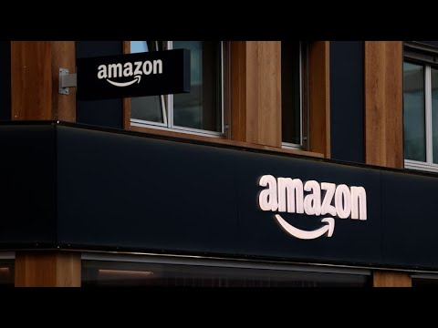

来B站一起耍【Global每日英语简报】
【亚马逊表示不会在产品上添加关税标签】
Summary: Amazon clarifies it never planned tariff disclosures on its main retail site, only considered duty-related notices for its low-cost service Hall shipping from China, and denies future plans despite White House claims.
摘要： 亚马逊澄清其从未计划在主零售网站上标注关税，仅考虑对从中国直邮的低价服务Hall进行关税相关说明，并否认了白宫声称的未来计划。

⏱️ Estimated Reading Time: 4 min
So, let's start with that, Matt.
那么，我们从这里开始吧，马特。
What is Amazon saying in response to the White House's claim and give us the full details of the story?
亚马逊对白宫的说法有何回应？请告诉我们完整细节。
Yeah, so Amazon says that uh they were never considering any sort of tariff-like disclosure on their main retail sites.
是的，亚马逊表示他们从未考虑在主零售网站上标注任何类似关税的信息。
What they were considering was uh they've got a lowcost goods service called Hall.
他们考虑的是其名为Hall的低价商品服务。
Um it's very much in the mold of Teimu, designed to ship things directly from China.
它很像拼多多Temu的模式，专为从中国直邮设计。
They say they were considering um some sort of uh disclosure there related to closing the exemption on duties for products shipped in that manner, but that they have no plans to do anything on the main site.
他们表示曾考虑对该服务中以此方式运输的商品标注关税豁免取消的通知，但主网站无相关计划。
And now they're telling us that uh they don't plan to and there's there's no uh there's no future for this.
现在他们明确表示没有计划，未来也不会实施。
There is no story here despite the reporting coming from Punch Bowl, Matt.
尽管Punch Bowl新闻有此报道，但此事并不属实，马特。
But the damage almost already done when it comes to the narrative that was drawn upon by the White House administration.
但白宫政府引用的说法已造成事实损害。
And it even went as though Caroline Levit went further putting in a what a old report from Reuters that was dated well in the previous administration.
卡罗琳·莱维特甚至引用了一份路透社旧报告，日期还属于上届政府时期。
Yeah. A little bit of a a shoot first ask questions later from the White House for sure on this before Amazon had had cleared this up at all.
是的，白宫这次绝对是"先开枪后问话"，在亚马逊澄清前就行动了。
Um but this this kind of you know validates Amazon's been really quiet on tariffs you know since they've rolled out right not a whole lot of public statements.
但这某种程度上印证了亚马逊在关税问题上一直保持低调，自政策实施以来公开声明很少。
You know we saw CEO Andy Jasse interviewed about this time a week ago and was asked on tariffs and and was sort of vague on the company's plans.
一周前CEO安迪·贾西被问及关税时，对公司计划也含糊其辞。
they don't see a whole lot of value being in the news at all on this and would rather stay out of it and you're kind of seeing seeing why this morning.
他们认为这类新闻毫无价值，宁愿置身事外，今早你也看到原因了。
I think it's helpful to our audience, Matt, to to help them understand how Amazon.com works from the inventory standpoint from the vendor standpoint.
我认为向观众解释亚马逊在库存和供应商层面的运作机制会很有帮助，马特。
Right. So on April 9th, we reported that Amazon canled some inventory orders from China and you included the reporting that those cancellations put the tariff exposure back on the vendors themselves.
对，4月9日我们报道过亚马逊取消部分中国库存订单，你们的报道指出这使关税责任落回供应商身上。
just explain how that marketplace works.
请解释下这个市场的运作方式。
Yeah, so Amazon sells things in two primary ways.
亚马逊主要通过两种方式销售商品。
You know, one is they go and grab a bunch of goods in bulk like any traditional retailer, Walmart, Target, they buy it, um they import it.
一是像沃尔玛、Target等传统零售商那样批量采购并进口商品。
They also have third party sellers that sell directly.
二是让第三方卖家直接销售。
Um that report that we had uh you know, one of the ways Amazon gets its goods here is it consolidates shipments and it tells the sellers, hey, listen, just give it to us um at the factory or or thereabouts.
我们之前的报道提到，亚马逊通过集货运输获取商品，要求卖家在工厂或附近交货。
We'll take it and we'll import it for you.
由他们负责进口。
They told some of their vendors, you know, listen, uh you guys are responsible for this yourselves.
但后来告知部分供应商需自行承担关税。
Um essentially putting them on the hook for uh for tariffs.
这实际上将关税责任转嫁给了他们。